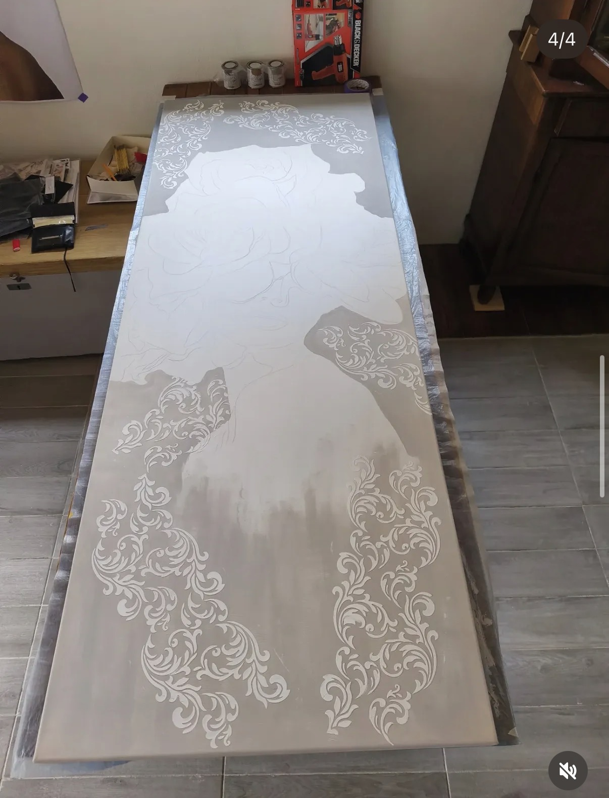
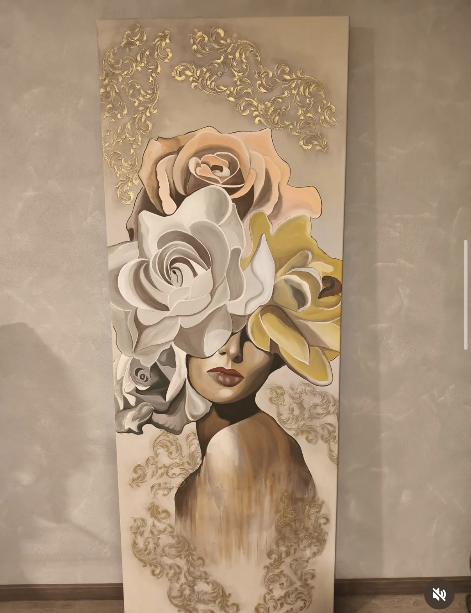

Ogni progetto segue un percorso: osservare, preparare, trasformare e proteggere.
Valutiamo struttura, materiali, condizioni e possibilità del mobile.
Pulizia, carteggiatura, riparazioni e preparazione delle superfici.
Colore, texture, stencil, decori e dettagli vengono scelti per il nuovo progetto.
Protezione finale e controllo dei dettagli prima che il pezzo trovi una nuova casa.

Le immagini del “prima”, delle lavorazioni e del “dopo” raccontano quello che spesso non si vede: ore di preparazione, prove, dettagli e finiture.

